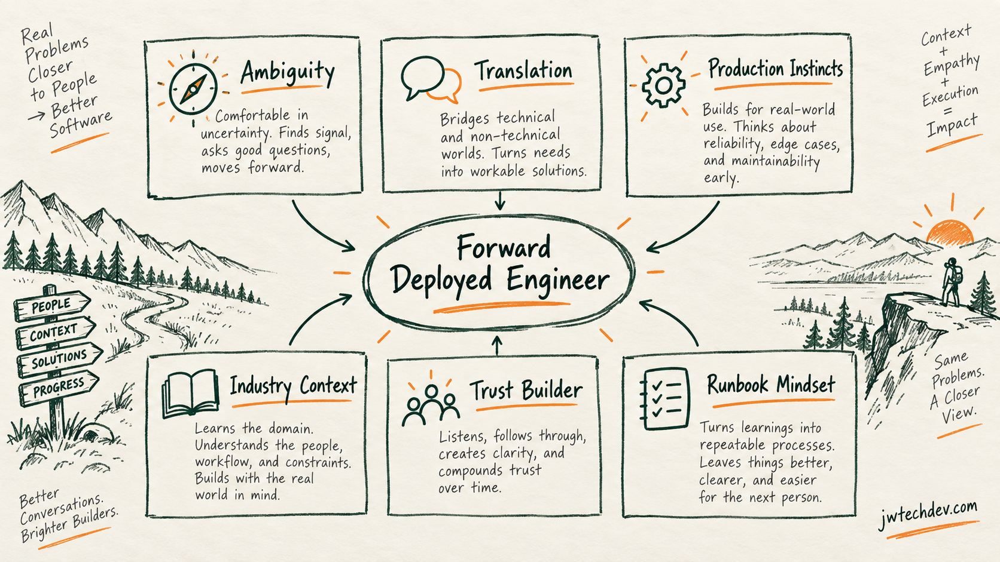

The best traits of a forward deployed engineer
The people who thrive in this role are not just strong coders. They can walk into ambiguity, understand a messy workflow, and turn field context into systems a team can actually operate.

Quick answer
The people who tend to be good at forward deployed engineering are not just strong coders. They are people who can walk into ambiguity, understand a messy workflow, translate between humans and systems, and turn field context into something production teams can actually operate.
If you need everything clean before you start, this role will probably feel miserable.
If you can ask better questions, tolerate incomplete information, earn trust, and still move the system toward a real deployment path, you might be built for it.
Why this role is different
Forward deployed engineering sits in the uncomfortable middle.
You are close enough to the user to hear the messy version of the problem, but technical enough to understand what has to survive after the conversation ends. That means the job is not just writing code. It is translation, judgment, prioritization, and production discipline.
A normal engineering role can sometimes live inside a clean ticket queue. A forward deployed engineer often starts before the ticket is clean. The customer, partner, user, or internal team may not know how to describe the actual problem yet. They may describe symptoms. They may ask for the wrong thing. They may use business language that hides a systems problem underneath.
That is where the role gets real. The best FDEs do not panic because the map is incomplete. They help draw the map.
Trait 1: Comfort with ambiguity
This is the big one.
Forward deployed engineering rewards people who can operate without perfect requirements. You may not know the exact system boundary on day one. You may not know which workflow matters most. You may not know who owns the decision. You may not even know if the stated problem is the real problem.
That does not mean you freestyle forever. It means you know how to create structure while moving:
- What do we know?
- What do we need to learn?
- What decision is blocked?
- What can we safely test?
- What would make this ready for production?
Ambiguity is not an excuse to be sloppy. It is a signal that the first job is discovery, not pretending certainty exists.
Trait 2: Translation between worlds
A strong FDE can talk to the business side without sounding like documentation, then talk to engineering without losing the real-world problem.
That translation layer matters because most failures do not happen from lack of intelligence. They happen because everyone thinks they are talking about the same thing when they are not.
A user says, "We need automation." The FDE has to ask:
- Automation of what?
- Who reviews the output?
- What data can it access?
- What action is it allowed to take?
- Where does the result go?
- How do we know it worked?
That is how vague desire turns into a buildable workflow.
Trait 3: Production instincts
A forward deployed engineer cannot be allergic to production reality.
It is one thing to make something work on a laptop. It is another thing to make it survive real identity, permissions, logs, monitoring, data boundaries, deployment paths, cost, rollback, and human approval.
This is where cloud fundamentals matter. If the solution is eventually going to live in an AWS-style environment, the FDE should be thinking about the operating layer early:
- Where does it run?
- What data does it need?
- What role or identity does it use?
- What can it write to?
- What gets logged?
- What happens when it fails?
- Who owns it after handoff?
The best FDEs do not wait until the end to ask those questions. They keep them in the room from the beginning.
Trait 4: Industry and organization context
Generic AI demos are easy. Useful systems are contextual.
Healthcare, finance, retail, logistics, education, media, and public-sector workflows do not all behave the same way. They have different vocabulary, approval paths, data sensitivity, risk tolerance, operating rhythms, and failure modes.
Someone who ignores that context may still build something impressive. It just might solve the wrong problem.
Good forward deployed engineers respect the domain. They learn how the organization actually works before they declare what should be automated or rebuilt.
Trait 5: Trust building
This role requires people to tell you what is really happening. That only happens if they trust you.
Trust does not come from sounding like the smartest person in the room. It comes from listening carefully, following through, explaining tradeoffs clearly, and not making people feel stupid for describing messy work.
The best FDEs can lower the temperature in the room. They can ask sharp questions without turning the conversation into an interrogation. They can tell the truth about constraints without making the team feel judged.
That matters because the real workflow is often hiding behind the polite workflow.
Trait 6: Runbook mindset
The worst version of forward deployed engineering creates dependency on one talented person. The best version leaves behind a system.
That means documenting what was learned, what was decided, how the workflow behaves, how to operate it, how to test it, how to recover it, and what should happen next.
If the solution only works when the FDE is in the room, the work is not done.
A runbook mindset turns field learning into reusable organizational knowledge.
Trait 7: Taste for scope
Forward deployed engineers have to be good at saying, "That is real, but not first."
Field work creates a lot of tempting branches. Every conversation can reveal another edge case, integration, dashboard, permission question, or workflow variant. If the FDE cannot protect scope, the effort expands until nobody can ship anything.
Good scope taste means knowing the smallest slice that proves the system can work without lying about what is still unfinished.
The simple test
If you want to know whether you might be good at forward deployed engineering, ask yourself this:
Can I walk into a messy room, learn the workflow, reduce confusion, build a small working slice, explain the tradeoffs, and leave behind something the next person can operate?
If yes, you probably have the shape for the role.
The coding matters. But the real advantage is being able to turn ambiguity into a system.
That is the work.
Want the starter kit?
Grab the free JWTechDev.com starter kit if you want a practical way to connect cloud basics, AI workflows, and approval gates.
Get resources